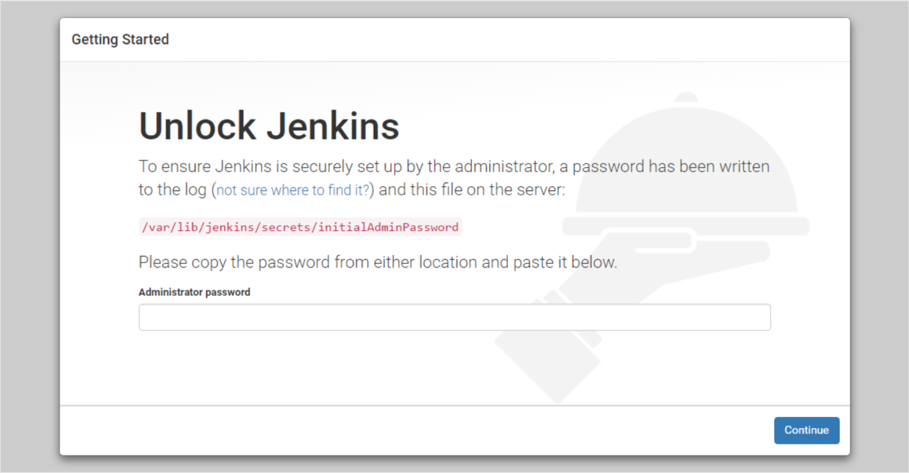
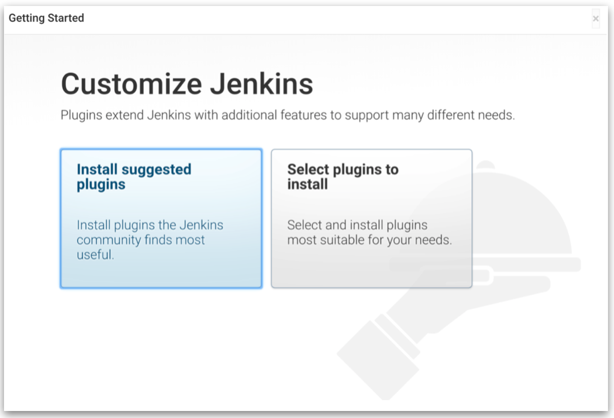
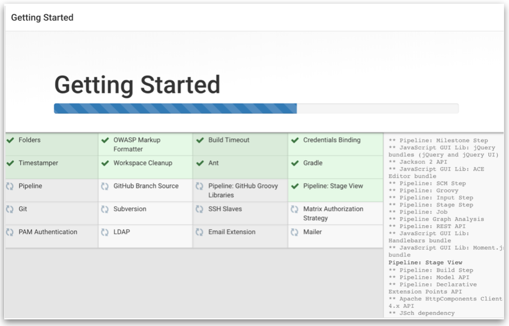
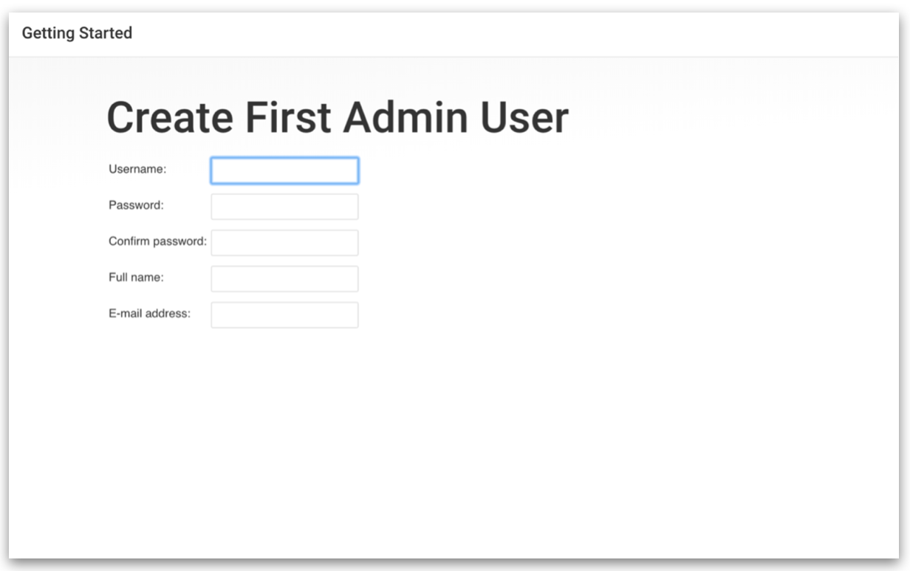

Setup of Jenkins
Objective
The aim of this section is to set up a Jenkins server for building various CI/CD pipelines and solve the 2nd point of the Problem Statement under Task 1.
About Jenkins
- Jenkins is a Java-based open-source automation software.
- It automates the repetitive technical tasks involved in the continuous integration and delivery of software
Prerequisites
- VM running Ubuntu 18.04 LTS.
- Java version 8. OpenJDK version 11.
Step 1 - Install Java
For setting up the Jenkins server, I followed this documentation as its very clear and easy to follow. The easiest option for installing Java is to use the version packaged with Ubuntu. By default, Ubuntu 18.04 includes OpenJDK version 11, which is an open-source variant of the JRE and JDK.
Install the default Java Runtime Environment (JRE) from OpenJDK 11.
$ sudo apt install default-jre
$ java --version # OpenJDK version
Next, install Java Development Kit (JDK) in order to compile and run some specific Java-based software.
$ sudo apt install default-jdk
$ javac --version # Java Compiler version
Step 2 - Install Jenkins
First, add the repository key to the system. On success, the system will return OK.
wget -q -O - <https://pkg.jenkins.io/debian-stable/jenkins.io.key> | sudo apt-key add -
Next, append the Debian package repository address to the server’s sources.list file.
sudo sh -c 'echo deb <http://pkg.jenkins.io/debian-stable> binary/ > /etc/apt/sources.list.d/jenkins.list'
sudo apt update
Install Jenkins and its dependencies.
sudo apt install jenkins
Step 3 - Start Jenkins Service
After all the installation steps, start Jenkins using systemctl. You can view the status of the service, using the 2nd command shown below.
sudo systemctl start jenkins
sudo systemctl status jenkins
Step 4 - Adding Firewall Rules
Jenkins uses port 8080 by default. Hence, we'll allow traffic to port 8080 by adding a firewall rule using ufw (uncomplicated firewall).
sudo ufw allow 8080
sudo ufw allow OpenSSH # Allow SSH access into the server over the internet
sudo ufw enable # Starts the firewall service
sudo ufw status # Shows all firewall rules
Step 5 - Setting Up Jenkins
To set up your installation, visit Jenkins on its default port, 8080, using your server domain name or IP address: http://

This password is present in the /var/lib/jenkins/secrets/initialAdminPassword file. Copy and paste the admin password from that file.
sudo cat /var/lib/jenkins/secrets/initialAdminPassword
You will be given a choice to install suggested plugins or select your own plugins (I chose to install the suggested plugins). 
After the installation of plugins is complete, you will be prompted to create admin user. You can either create your own, or continue with the default admin.  
You will see an 'Instance Configuration' page that will ask you to confirm the preferred URL for your Jenkins instance. After confirming the appropriate information, click Save and Finish. You will see a confirmation page confirming that “Jenkins is Ready!”
Note:
If you had moved forward with the default admin and not created a custom admin user, when logging in, use username="admin" and password="Dashboard → Admin → Configure